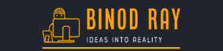

Passionate Web Developer at Top Nepal Pvt. Ltd., experienced in fast, secure, and scalable website creation. Over 1 year as a WordPress Developer at NexSewa, with successful Laravel freelance projects. Delivering high-performing, user-friendly solutions.
Building modern, responsive, and user-friendly websites using Laravel and WordPress, tailored to client needs.
Creating custom themes, plugins, and CMS solutions to enhance business websites and improve usability.
Developing secure, scalable, and full-stack web applications with advanced functionality and clean architecture.
Designing and developing online stores with features like product management, payments, and order tracking.
Designing professional personal portfolios, company profiles, and business websites that reflect brand identity.
I have practical skills in WordPress and Laravel, building user-friendly websites independently. Proficient in Elementor and PHP at NexSewa, I adapt quickly to new technologies, making me a valuable asset.
I worked one year as a WordPress Developer at NexSewa, gaining experience in website customization. Now freelancing as a Laravel PHP Developer, I deliver secure, user-friendly applications with clean, efficient code.
Dec 2025 - Present
Top Nepal International Pvt.Ltd
I am currently working as a Web Developer at Top Nepal Pvt. Ltd., building modern websites using WordPress. I developed a custom WordPress Block Theme from scratch, which I used to launch multiple fast, responsive, and SEO-friendly websites.
Aug 2025 - Nov 2025
BaAma Consultant
As a freelance web developer specializing in Laravel PHP and WordPress, I have successfully delivered numerous projects, creating dynamic, secure, and scalable web applications for clients.
2024 - 2025
NexSewa
I worked at NexSewa as a WordPress Developer, where I built and customized websites, and ensured websites were secure, responsive, and user-friendly. This experience helped me strengthen my skills in WordPress development and client-focused web solutions.
From school to university, I built a strong academic foundation in science and technology. With a Bachelor’s in Computer Networking & IT Security, I gained expertise in networking, cybersecurity, and web development.
2019-2022
Islington College, Kathmandu
Graduated with a Bachelor’s in Computer Networking & IT Security, gaining strong expertise in networking, cybersecurity, and web technologies, which shaped my career as a web developer.
2016-2018
Nepal Mega College, Kathmandu
Completed +2 in Physical Science, strengthening my knowledge in mathematics, physics, and analytical problem-solving, which built a solid base for my IT career.
2006-2016
New Guidance Sec School, Barahatwa
Completed my school-level education, building a strong academic foundation and essential skills that shaped my interest in technology and problem-solving.
Proficient in HTML, CSS, JavaScript, PHP, Laravel, WordPress, SQL, and Git, with the ability to build secure, responsive, and scalable web applications.
Hello, I’m Binod Ray, a passionate web developer with expertise in WordPress and Laravel PHP. I hold a Bachelor’s degree in Computer Networking & IT Security from Islington College, Kamalpokhari.
I started my career at NexSewa, working for one year as a WordPress Developer, where I built and customized websites with custom themes and plugins. Currently, I work as a freelance Laravel PHP Developer, delivering dynamic, secure, and user-friendly web applications for clients.
I focus on writing clean, efficient, and optimized code, creating solutions that are not only functional but also scalable. My passion lies in turning ideas into reality, building websites and applications that make an impact.
NameBinod Ray
GenderMale
Age26 Years Old
StatusSingle
AddressTikathali, Lalitpur
NationalityNepali
Experience2+ Year
Full TimeAvailable
FreelanceAvailable
Phone(+977) 9742458391
Emailybinod857@gmail.com
LanguagesNepali, Bhojpuri, English, Hindi
01
Built a comprehensive web application for Nepal Cancer Hospital, enabling users to access hospital information, services, specialists, and patient resources online. Comprehensive backend interface for administrators to manage applications, review documents, and communicate with applicants.
Laravel PHP, CSS, MySQL, JavaScript, Bootstrap
02
Pabis Collection is a stylish e-commerce platform showcasing a curated selection of fashion items. Built with Laravel, the site offers a seamless shopping experience with a clean, responsive design.
Laravel, PHP, MySQL, CSS, JavaScript, Bootstrap, Blade
03
Developed a modern, visually appealing website for BrandAdelaide using WordPress and the Elementor page builder. The design emphasizes clarity, brand storytelling, and user-friendly navigation.
WordPress, Elementor, ConeBlog, Contact Form 7
04
Clean Sydney Clean is a professional cleaning services provider based in Sydney, offering a range of services including end-of-lease cleaning, office cleaning, gym cleaning, and general house cleaning. The website was developed using WordPress and Elementor to provide a user-friendly experience for both clients and administrators.
WordPress, Elementor, HTML5, CSS3
05
Expedition Explorers is an Australian-based travel agency specializing in curated adventure tours to remote and captivating destinations. The website was developed using WordPress and Elementor to provide a user-friendly experience for both clients and administrators.
WordPress, Elementor, HTML5, MySQL
06
Care Bridge Nursing is an Australian-based agency specializing in providing qualified nursing staff to aged care facilities. The website was developed using WordPress and Elementor to offer a user-friendly platform for both clients and staff.
WordPress, Elementor, HTML5, CSS3
Open to job opportunities, collaborations, or tech discussions. Let’s connect and talk web development, creative ideas, or exciting projects. Always eager to learn, share, and grow in the tech space.
Phone
(+977) 9742458391
ybinod857@gmail.com
Address
Tikathali, Lalitpur